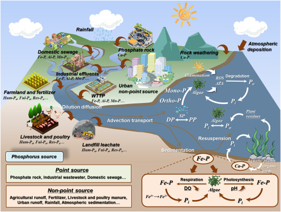
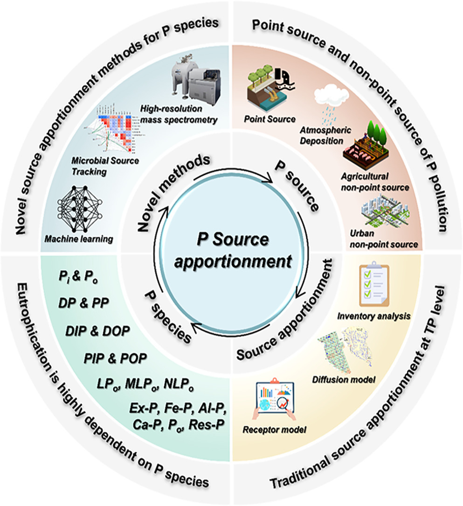
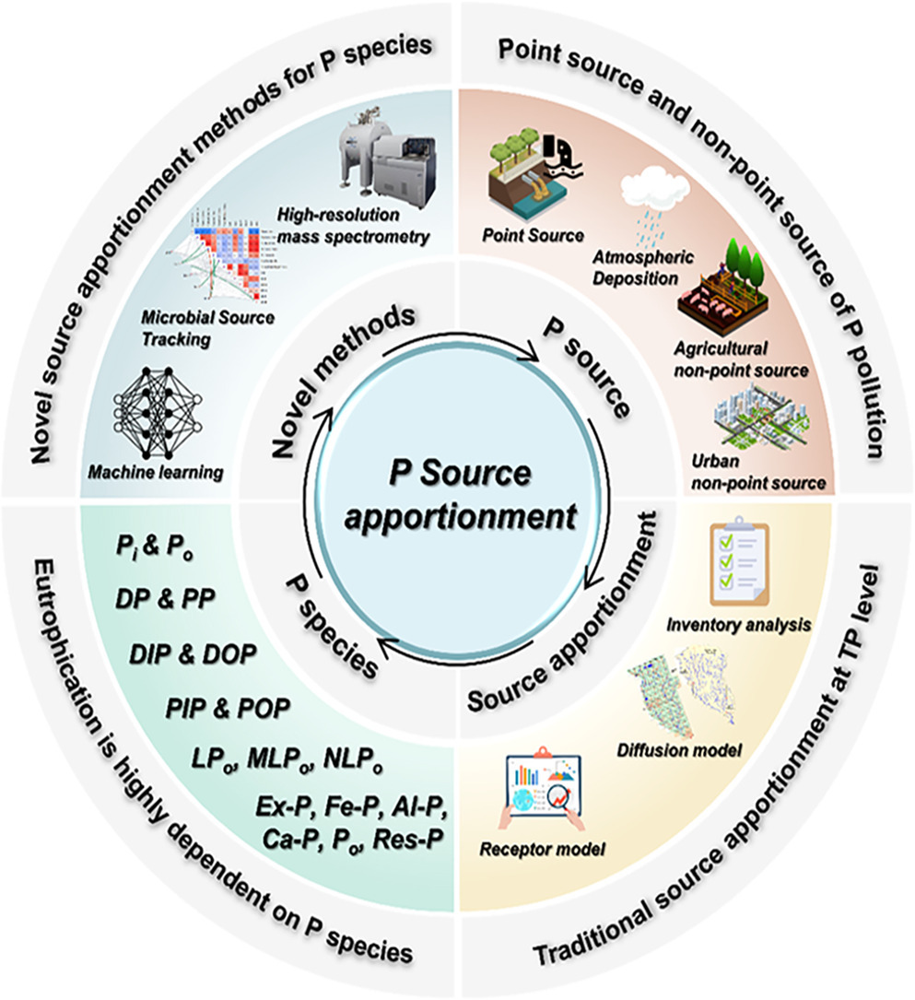
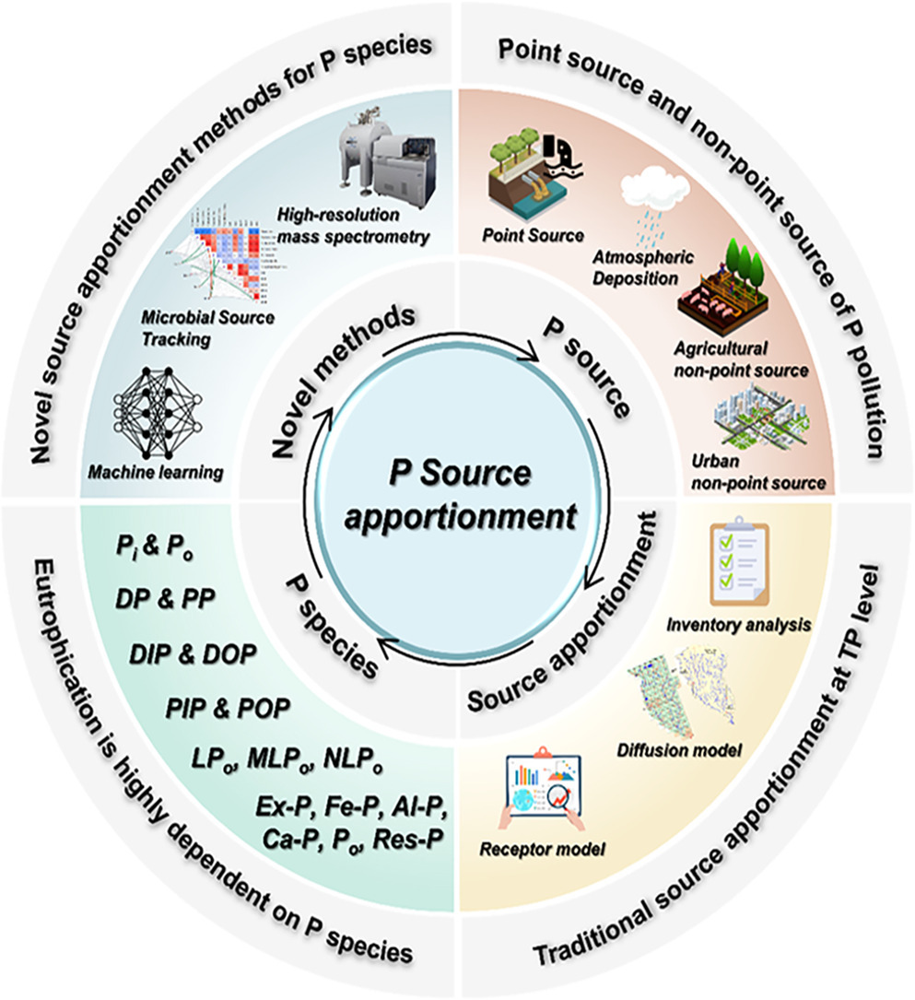

简介
磷（P）是驱动流域生态过程的核心元素，其迁移转化行为直接关联水体富营养化、土壤肥力演变及生物地球化学循环。
本网页聚焦流域尺度磷的“源解析-迁移机制-环境效应-综合治理”全链条研究，整合多学科方法与前沿技术，致力于解析磷循环的复杂界面过程，为水质安全、生态修复与可持续农业提供科学决策支持。
研究介绍
流域磷研究涵盖六大核心方向，系统揭示磷从“产生”到“归宿”的多尺度行为：
源解析与负荷估算 —— 精准定位污染源，量化磷输入输出通量；
迁移转化过程 —— 揭示磷在土壤、水体、生物间的动态交互机制；
形态与赋存分布 —— 解析磷化学形态差异及其环境风险；
收支平衡与通量评估 —— 构建磷循环模型，优化资源利用效率；
环境效应与生态响应 —— 评估磷过量输入对生态系统的级联影响；
减排与管理技术 —— 集成智能防控策略，推动治理技术革新。
图片推荐

 

